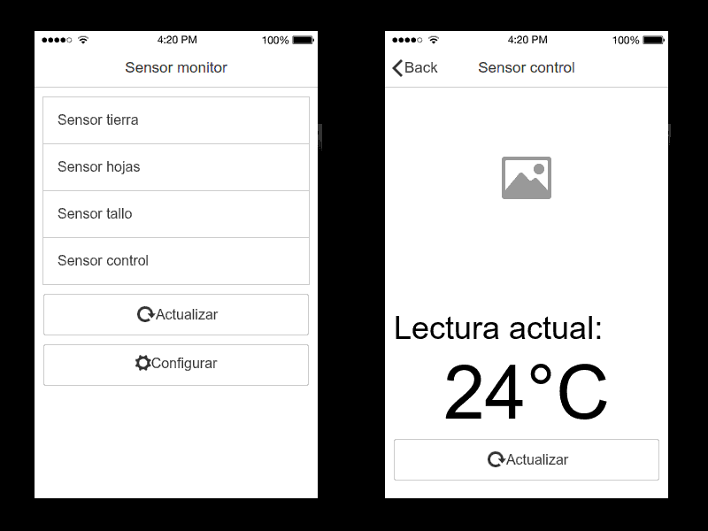

Charla: prototipado rápido de aplicaciones móviles
Caso práctico: monitor de sensores en "tiempo real"

José Ignacio Santa Cruz (ese soy yo :) )
- Ingeniero informático
- Desde 1995 trabajando en desarrollos web (principalmente)
- Actualmente trabajando para Solem como Ingeniero de desarrollo, especialista en UI-UX.
¿Qué conozco?
- HTML5
- CSS3
- JavaScript: jQuery, Angular.js, Node.js
- PHP
- Java
- y algunas "otras cosas"...
El problema (bajo el contexto de esta charla)
Una aplicación de monitoreo de sensores de temperatura para un viñedo.
Tenemos varios sensores, ubicados en lugares estratégicos de cada planta, tierra, tallo, hojas, más un sensor de control.
La idea: Recibir la lectura de cada sensor en tiempo real.
Los inversores se muestran interesados en el proyecto, pero no quieren quedarse con las buenas intenciones de una presentación en papel.
¡Ellos quieren ver algo que funcione!
El prototipo
- Contrario a lo que muchos pueden creer, es "algo más" que el dibujo de las pantallas.
- De hecho dibujar las pantallas es la parte "fácil", pero es solamente un punto de partida.
- El prototipo debe:
- Ser cercano al producto final.
- Responder al requerimiento, ie: funcionar.
Dibujando el prototipo
- Podemos hacerlo con lápiz y papel, o pizarra y plumón.
- Importante:
- Debe existir absoluta claridad respecto a lo que necesitamos.
- La aplicación debe ser simple.
- La aplicación debe ser "rápida de desarrollar".
- Vamos a utilizar una herramienta web de uso gratuito: Moqups
...
Esto NO ES el prototipo.
Acercándonos al prototipo
- Tenemos un dibujo, pero necesitamos una aplicación.
- Vamos a utilizar otra herramienta web de uso gratuito: Ionic Creator
...

Esto es casi el prototipo (casi).
Haciendo que el prototipo "funcione"
- Esta es la parte "no sencilla" de la construcción de un prototipo.
- Necesitamos que:
- Existan varios sensores.
- Los sensores actualicen sus valores regularmente.
- La aplicación muestre como van cambiando los valores.
Haciendo que el prototipo "funcione"
- Una base de datos MySQL para almacenar el histórico de valores registrados por los sensores.
- Un backend en NodeJS que consulte regularmente la base de datos y se traiga los valores actualizados.
- Protocolo MQTT para comunicar el backend con la aplicación.
...
Cosas que afinar
- Recordemos que un prototipo es "cercano" al producto final.
- Eso nos da licencia para omitir algunas cosas, y espacio para poder mejorar muchas otras.
- El backend no necesariamente tiene que ser el presentado en esta charla.
- En materia de sensores consideren hardware con capacidades de red. Un Arduino y el correspondiente sensor pueden hacer todo esto y mucho más.
Material de la charla
- Sensor monitor mockups
- Sensor monitor App
- BackEnd IOT
- FrontEnd IOT
- Presentación charla
- IMPORTANTE: Para clonar los proyectos desde git.santa.cl/uai deberán cambiar la dirección IP 192.168.1.30 por git.santa.cl
Muchas gracias
- jsanta.cl
- @JSantaCL